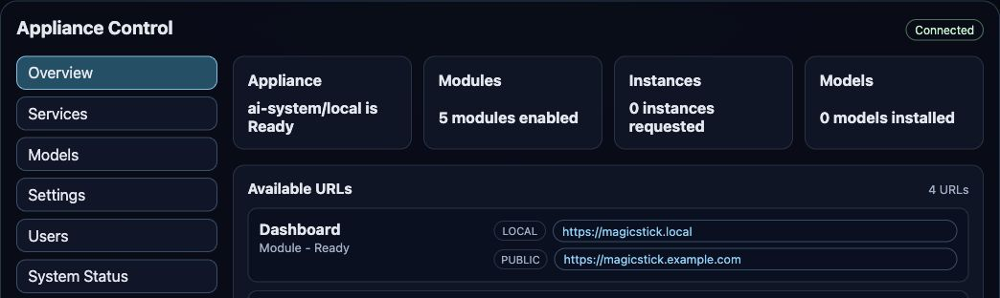
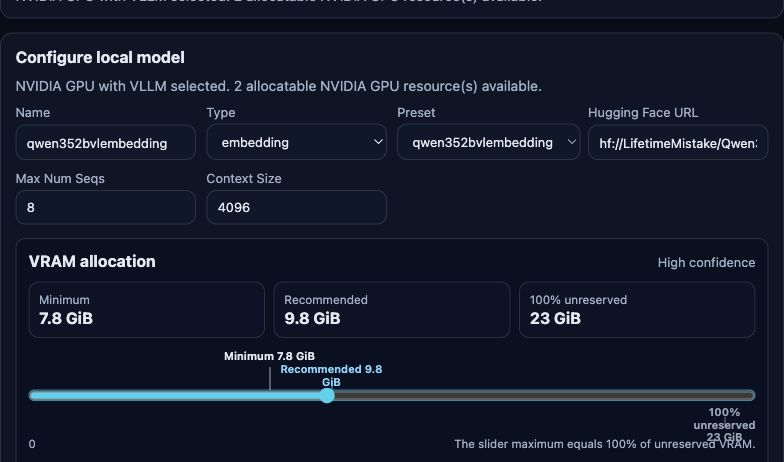
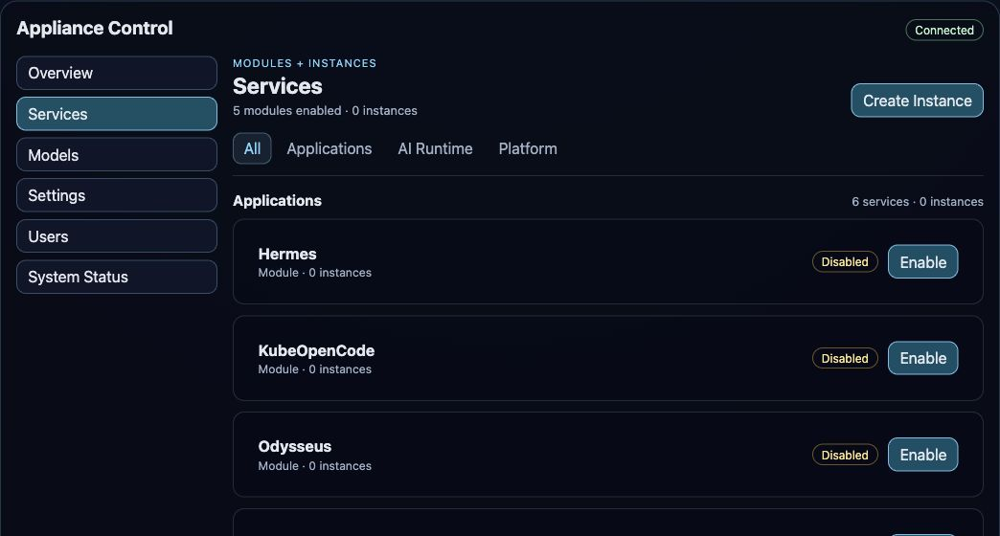

From empty machine to usable platform
Bootstrap Ubuntu, K3s, Flux, identity, the gateway, and MagicStick—or add the platform safely to an existing Kubernetes cluster.
Open-source AI appliance
MagicStick turns a bare-metal server, virtual machine, or existing Kubernetes cluster into a self-hosted AI platform—with models, applications, identity, and day-two operations in one control plane.

Install once, then operate models and AI applications through a purpose-built control plane instead of assembling identity, routing, runtimes, and observability by hand.
Bootstrap Ubuntu, K3s, Flux, identity, the gateway, and MagicStick—or add the platform safely to an existing Kubernetes cluster.
Manage services, instances, models, users, API keys, Kubernetes access, domains, licenses, and system health from the browser, CLI, TUI, or API.
Keep local inference and application data on infrastructure you control while retaining the option to route selected models to external providers.
MagicStick turns model metadata and detected hardware into an explainable deployment plan, while keeping every resource visible in Kubernetes.

Search Hugging Face or the Ollama Library, select a compatible artifact or quantization, inherit published context metadata, and see minimum and recommended memory before anything is scheduled.

Enable reusable modules and create separate application instances for teams or projects. MagicStick resolves dependencies, publishes routes, connects models, and reports progress without hiding the underlying cluster state.
The dashboard is a focused control surface, not a second source of truth. Actions become declarative resources; operators and Flux reconcile them into the running platform.
MagicStick Community remains a useful MIT-licensed platform. A signed offline entitlement activates packaged Enterprise capabilities in the same API image—without creating a second product to deploy.
Install, operate, integrate, and extend a self-hosted AI appliance without an Enterprise license.
Add precise organizational controls while the Community foundation stays available and operational.
Enterprise commercial terms are currently under review. Planned capabilities are not part of the current product.
Every path converges on the same protected appliance state. Preflight checks expose conflicts before installation, and resolved Git revisions keep deployments reproducible.
Boot the USB installer to install Ubuntu, K3s, Flux, and MagicStick from scratch.
Best for · dedicated applianceUse the cloud-init and autoinstall template for a reproducible virtual appliance.
Best for · remote evaluationRun the reviewed installer on a dedicated host or VM to add K3s, Flux, and MagicStick.
Best for · fast startInstall only the Flux-managed cluster components from Bash or PowerShell.
Best for · existing platformThe Linux entrypoint is intentionally downloadable before execution and supports a non-mutating preflight.
$ curl -fsSL \
https://raw.githubusercontent.com/QualityMinds/AIppliance-Magic-Stick/main/install-from-linux.sh \
-o /tmp/install-from-linux.sh
$ sudo bash /tmp/install-from-linux.sh --preflight-only
$ sudo bash /tmp/install-from-linux.sh
# Then open the protected first-run setup
https://magicstick.localThe public repository documents installation, architecture, runtime APIs, model operations, authentication, troubleshooting, and the extension boundaries.
Choose hardware, VM, Linux, or existing-cluster setup and complete first run.
ProductExplore the current feature set, screenshots, supported runtimes, and known boundaries.
BuildUnderstand repository layers, bootstrap flow, Flux graph, operators, and contracts.
ModelsFollow discovery, quantization, memory estimation, placement, and catalog publication.
IdentityReview local SSO, roles, protected routes, terminal login, and federation.
OperateDiagnose Flux, K3s, storage, GPUs, models, routes, events, and application state.